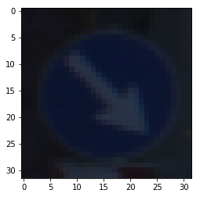
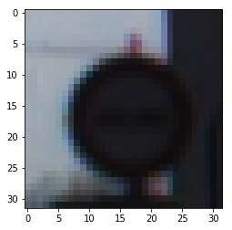
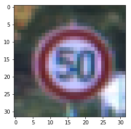
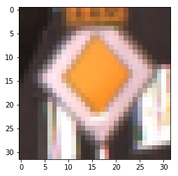
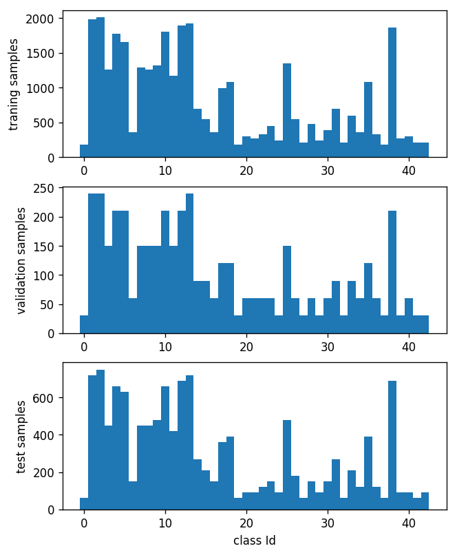
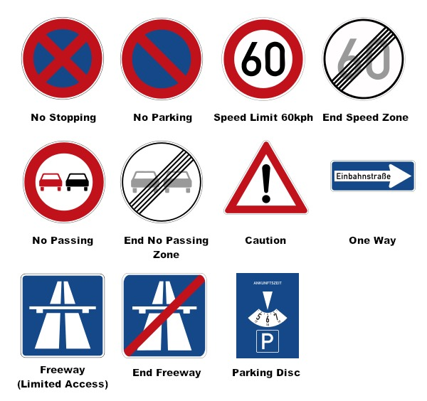

Build a Traffic Sign Recognition Project
The goals / steps of this project are the following:
* Load the data set (see below for links to the project data set)
* Explore, summarize and visualize the data set
* Design, train and test a model architecture
* Use the model to make predictions on new images
* Analyze the softmax probabilities of the new images
* Summarize the results with a written report
I am submitting this report alongside the project code found here.
I used the numpy function to calculate some summary statistics of the traffic
signs data set:
I examined the data visually first by plotting some examples. Below are images of some of training data traffic signs
   
To my surprise, images do not have very good quality and have varying luminance. I have to admit that I was not able to classify some of them, and had doubt about the performance of the classification algorithm.
I was also curios to see how is the distribution of the classes between training, validation and test data. figure below show the number of samples in each class for training, validation and test data. Although the number of samples for different classes vary, for each class the proportion of samples is similar between training, validation and test data, which is a good sign.

I decided not to change the color to grayscale, as color has some important information in traffic sign. Additionally, grayscale is a linear combination of the three colors, and if that info in necessary, hopefully the neural net will find the relation by itself.
I was planning to normalize the brightness of the images, as some images were very dark. However, I got reasonably good result without normalizing the brightness and decided to not do it.
Of course to ensure proper operation of the neural network we need to normalize the input. I chose to normalize the values to between 0 and 1. I used the following formula to normalize the input data: x = (x - x_min)/(x_max - x_min).
Note that x_max and x_min will be calculated based on training data and will be used for validation and test data as well.
Normalization is needed to ensure that all inputs have the same scale. Additionally, it helps to keep the initial output of the network close to the desired magnitude (0 and 1 for on-hot mapping) and prevent excessively large errors.
I started with the Le-Net architecture and built on top of that.
My final model consisted of the following layers:
| Layer | Description |
|---|---|
| Input | 32x32x3 RGB image |
| Convolution 5x5 | 1x1 stride, valid padding, outputs 28x28x10 |
| RELU | |
| Max pooling | 2x2 stride, outputs 14x14x10 |
| Convolution 5x5 | 1x1 stride, valid padding, outputs 10x10x16 |
| RELU | |
| Max pooling | 2x2 stride, outputs 5x5x16 |
| Dropout | 50% dropout probability |
| Fully connected (input 400) | outputs 120 |
| RELU | |
| Dropout | 50% dropout probability |
| Fully connected (input 120) | outputs 84 |
| RELU | |
| Output layer - fully connected (input 84) | outputs 43 (classes) |
To minimize the number of hyper parameters I utilized the “adamoptimizer” for the training. Adamoptimizer will adaptively change the learning rate based on the variations in the gradient. Therefore, there is no need to change the learning rate gradually.
I started with the initial learning rate of 0.001 and achieved reasonably good result.
With regard to batch size, I first started with large batch size of 1024. However, the learning was relatively slow. I believe this is due to lower number of updates. Since effectively the number of updates in each epoch is total training samples divided by batch size.
I could have increased the learning rate to speed up the training, but decided to decrease the batch size to have more updates per epoch. After trial and error, I chose the batch size of 64.
Regarding Epochs, I started with 10 Epochs, but could see that both training and validation accuracy is still increasing after 10 epochs. So I increased the epochs to 20, and this time the validation accuracy plateaued after around 15 epochs. Since the training accuracy was also staying constant at this point (slightly below 1 of course), I was not worried about over fitting and kept the number of epochs at 20.
My final model results were:
* training set accuracy of 0.992
* validation set accuracy of 0.959
* test set accuracy of 0.952
I started with the Le-Net architecture from the course. Le-Net architecture provides two convolution layers that can extract desired visual features from the image. The convolution layers are followed by three fully connected layers that provide the nonlinear mapping between features and the classes.
While it was suggested to normalize the input between -1 and 1, I decided to normalize the data between 0 and 1. Since the weights are already randomized and can have negative values, I felt a having inputs between 0 and 1 would be a better choice.
I chose to not include the softmax module at the final layer. since the desired one-hot values are 0 and 1 and the softmax output reaches those values with infinity inputs. therefore it might cause the weight to increase unnecessarily.
The original Le-Net architecture resulted in relatively good training accuracy, but from the beginning the validation data accuracy was significantly lower than training data. So I suspected that that we are over fitting to the training data.
I reduced the number of outputs in each layer to reduce the size of network and decrease the chance of over fitting. But that did not help much with over fitting, while the training data accuracy reduced.
I decided to add a dropout layer after each nonlinear function (4 dropout layers in total). the dropout layers significantly helped with the over fitting and brought training and validation accuracy in the same ballpark. however, the training accuracy was not satisfactory.
I increased the output size of layers to provide more freedom for training. but the training accuracy did not get close to 1.
Finally, I decided to remove the dropout layer from the first and last nonlinear layers. leaving two dropout layers in the middle of network, one after the second convolution result and one after the first fully connected result. my rational was that these two dropout layers will prevent enough information from input to output to overcome over fitting without crippling the neural network too much.
With this setup I was able to achieve the above result.
I used the following set of traffic signs from the internet and used them to test the classifier.

I cropped the signs and resized them to 32 by 32 pixels. the result were images below:
Here are the results of the prediction:
| # | Image | Prediction |
|---|---|---|
| 1 | No Stopping | Speed limit (30km/h) |
| 2 | No parking | Keep right |
| 3 | speed limit 60kph | Speed limit (60km/h) |
| 4 | end speed zone | End of speed limit (80km/h) |
| 5 | no passing | No passing |
| 6 | end no passing zone | End of no passing |
| 7 | caution | General caution |
| 8 | one way | End of no passing |
| 9 | freeway | Go straight or left |
| 10 | end freeway | End of no passing |
| 11 | parking disc | Go straight or left |
At first it seemed that the system only predicted 5 signs out of 11 signs resulting in about 45% accuracy. Which is a huge discrepancy with test data result. However, after examining all the classes, I observed that only 5 of the new signs are from classes defined in the dataset, therefore the model was able to correctly guess 5 of the 5 traffic signs, which gives an accuracy of 100%. This result is inline with the test data accuracy. However, we only have 5 images and to accurately decide on the classification accuracy we need many more images.
Here I only discuss the 5 images that have proper classes. images 3 to 7 above.
My model does not have a softmax layer at the end, so I applied a softmax function to my logit outputs to calculate the probabilities below.
For the first image (speed limit 60kph), the model is completely sure that this is a 60kph speed limit sign (probability of 0.999). The other top three guesses are also all speed limits signs with varying speed limits.
| Probability | Prediction |
|---|---|
| .999 | Speed limit (60km/h) |
| .001 | Speed limit (50km/h) |
| .000 | Speed limit (80km/h) |
| .000 | Speed limit (30km/h) |
| .000 | No passing |
For the second image (end speed zone ), the model is relatively sure that this is a End of speed limit (80km/h) sign (probability of 0.914). I actually did no find End of speed limit sign with 60kph value in the classes. the lower probability than previous image can be due to the fact that this image has not been in the training data. that being said, two other guesses of the classifier are also speed limit related with lower probabilities.
| Probability | Prediction |
|---|---|
| .914 | End of speed limit (80km/h) |
| .070 | End of all speed and passing limits |
| .014 | Speed limit (60km/h) |
| .000 | End of no passing by vehicles over 3.5 metric tons |
| .000 | Speed limit (30km/h) |
For the third image (no passing), the model is completely sure that this is a No passing sign (probability of 1).
| Probability | Prediction |
|---|---|
| 1.000 | No passing |
| .000 | Vehicles over 3.5 metric tons prohibited |
| .000 | No passing for vehicles over 3.5 metric tons |
| .000 | End of no passing |
| .000 | Slippery road |
For the fourth image (end no passing zone), the model is completely sure that this is a End of no passing sign (probability of 0.997).
| Probability | Prediction |
|---|---|
| 0.997 | End of no passing |
| .002 | End of all speed and passing limits |
| .000 | End of no passing by vehicles over 3.5 metric tons |
| .000 | Go straight or right |
| .000 | Speed limit (100km/h) |
For the fifth image (caution), the model is completely sure that this is a General caution sign (probability of 1). that being said, other top guesses of the classifier all have a triangular sign, which is reasonable.
| Probability | Prediction |
|---|---|
| 1.000 | General caution |
| .000 | Pedestrians |
| .000 | Traffic signals |
| .000 | Road narrows on the right |
| .000 | Bicycles crossing |
[1] An overview of gradient descent optimization algorithms, http://sebastianruder.com/optimizing-gradient-descent/index.html
Written with StackEdit.